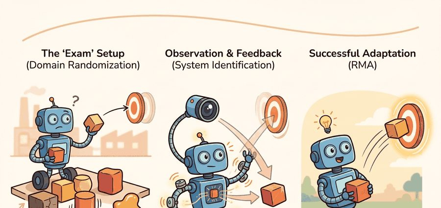
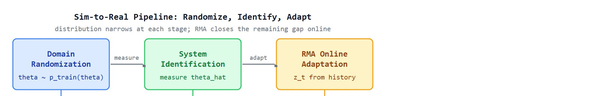

"Randomize to build robustness, identify to shrink the target, then adapt when the robot finally tells you which world it actually landed in."
A Parameter-Tuning Engineer, Third Cup of Coffee

This section assumes familiarity with the reality-gap taxonomy introduced in section 20.1 and the transfer-failure taxonomy from section 20.2; those two sections define the vocabulary (dynamics parameters, privileged observations, contact model) used throughout. The two-phase privileged-to-adaptation training described here is extended in section 20.4, which shows how a policy trained with domain randomization and RMA can be fine-tuned safely on hardware without restarting from scratch. The same online-adaptation idea recurs alongside meta-learning and continual learning, where the adaptation module is replaced by a gradient-based fast-update step.
A quadruped trained entirely in simulation steps onto outdoor gravel for the first time, and within three strides its gait has shifted to match the surface, without any retraining or human intervention. That capability is not magic: it is the product of three complementary ideas working together. Domain randomization trains a policy across thousands of simulated physics variants so the real world is likely already in the distribution. System identification measures the real robot and narrows that distribution to what actually matters. Rapid motor adaptation (RMA) then closes the remaining gap online, inferring unseen dynamics from a half-second of sensory history and adjusting every control step. Together, these tools are why robots trained in simulation can (as of 2021-2024) walk on terrain their designers never anticipated.
Two quadrupeds run the same simulator policy onto the same patch of wet gravel; one sprawls within a stride and the other shifts its gait and keeps walking, and the only difference between them is which dynamics parameters their engineers chose to randomize, measure, adapt online, or leave fixed. Getting that choice right, for every parameter of the robot, and recording it in a single reproducible manifest, is the skill this section builds. As Figure 20.3A shows, the three techniques are complementary stages rather than competitors: randomization widens the training world, system identification centers it on the real robot, and adaptation handles what still changes during deployment.

Turning that three-stage picture into engineering practice starts with naming what the pipeline actually operates on, so this section develops the technical contract for dynamics randomization. The parameters of interest include mass, inertia, center of mass, joint damping, motor strength, actuator delay, contact friction, restitution, sensor noise, and terrain geometry. Each parameter should have a reason for its range.
The key question is practical: should we make the training distribution wider, identify the real parameter more carefully, or build an adaptation module that tracks the parameter during rollout?
As a decision rule: widen randomization for parameters that vary across deployment sites and are cheap to sample in simulation (terrain height, friction across surfaces); run system identification for parameters that are fixed per-robot and measurable from a hardware trace (motor scale, actuator delay); and reserve online adaptation for parameters that drift during a single deployment and cannot be measured in advance (payload changes, battery voltage sag, surface conditions mid-walk). The algorithm and worked example below apply this rule concretely.
Blindly widening every randomization range is not robustness. It can teach a conservative policy that survives everything by doing too little. The useful range is wide enough to cover plausible reality and narrow enough to preserve the task's control structure.
Let $\theta$ denote simulator dynamics parameters such as mass, friction, damping, and delay. Domain randomization trains a policy over $\theta \sim p_{\text{train}}(\theta)$ rather than one fixed simulator. System identification estimates $\hat{\theta}$ from hardware traces. Residual randomization then trains or evaluates over $\theta \sim p(\theta\mid \hat{\theta}, \Sigma)$, where $\Sigma$ represents what the measurement still cannot pin down.
System identification matters because a robot's physical parameters never match the simulator default. Consider a 12 kg quadruped with worn bearings. Its effective joint damping differs from the CAD model, so a policy trained on the nominal value applies incorrect torques from the first stride. Wrong dynamics assumptions cause instability on hardware. Overestimate motor strength by 15% and the robot under-drives its joints, losing balance on inclines where the simulator policy stayed reliable. Centering randomization on measured values rather than guesses keeps the training distribution useful rather than wasteful.
System identification works by recording time-aligned command and response traces from the real hardware, then solving an optimization that minimizes the difference between the observed response and the simulator's prediction under candidate parameter values. For actuator delay, a step-command trace lets you read the lag directly. For joint damping, a free-swing experiment fits a damped oscillator. For motor strength, a series of torque commands at known loads yields a gain curve. Each identified value replaces a guess with a measurement, narrowing the residual randomization range and concentrating training rollouts on dynamics that actually occur.
Identification narrows the gap well, yet robots still fall when the terrain changes mid-deployment, because identification is a one-time measurement, not a running estimate. Once the robot leaves the lab, conditions drift, and no prior measurement tracks that drift. That is the problem RMA solves; the next paragraphs define RMA's adaptation vector $z_t$ before using it, so the mechanism below builds directly on the $\theta$, $\hat{\theta}$, and $\Sigma$ notation just introduced.
A policy that survives simulation but collapses on hardware is not a robust policy; it is a well-calibrated guess waiting for the world to disagree.
Rapid motor adaptation adds an online inference loop. A base policy receives observations and an adaptation vector $z_t$ inferred from recent state-action history. If the floor becomes slippery or the payload changes, $z_t$ should move before the robot falls, giving the same base policy a different dynamics context. This separation of concerns is what makes the approach deployable: it is called the privileged-to-encoder handoff (privileged input means ground-truth simulator values, like the true friction coefficient, that only exist in simulation and are unavailable on hardware), and it means the base policy never changes between simulation and hardware, only the input source does.
Think of a professional chef trained in a fully-equipped kitchen where every ingredient is labeled with its exact weight and moisture content. That chef learns to cook perfectly when given precise measurements. Now send the same chef to a field kitchen with no scale and no labels: a second skill kicks in, reading the dough by feel, estimating hydration from how it pulls, and handing the same information to the cooking technique in a different form. The technique itself never changes; only the source of the input does. The privileged-to-encoder handoff works the same way: Phase 1 builds the cooking skill using labeled inputs, Phase 2 trains the tactile sense that reconstructs those labels from touch alone, and at deployment the skill runs unchanged with the reconstructed signal standing in for the missing labels.
The RMA paper (Kumar et al., 2021) makes the mechanism concrete. A quadruped trains in two phases. Phase 1 trains a base policy that receives the true dynamics parameters as privileged input (mass, friction, payload) alongside proprioceptive observations. This policy learns to walk across terrain with friction coefficients ranging from 0.35 to 1.25 and payloads from 0 to 12 kg. Phase 2 trains a small adaptation encoder. The encoder takes only the last 50 proprioceptive state-action pairs (about 0.5 seconds of history at 100 Hz) and predicts the $z_t$ vector that the base policy would otherwise receive from privileged input. At deployment, the privileged channel drops out and only the encoder runs.
So far: Phase 1 trains a base policy on true dynamics values it will never see again on hardware, Phase 2 trains a separate encoder to guess those same values from recent motion alone, and only the encoder's guess reaches the robot at deployment.
The reported result is that the adaptation policy matches the privileged-input policy within 5% on flat ground and transfers to outdoor grass and gravel without retraining. Without RMA, a policy trained on a single fixed simulator fails on outdoor terrain within seconds; with the two-phase approach, the same base policy walks over 500 meters of outdoor terrain across three surface types without a single fall. The sample cost tells the same story. In ablations, reaching equivalent transfer robustness through broader domain randomization alone took roughly 80,000 training episodes. The two-phase RMA procedure reached the same robustness in about 4,000 episodes, because the adaptation encoder concentrates the learning signal on what proprioception actually reveals rather than blindly covering every conceivable physics variant.
A common misconception is that rapid motor adaptation works by updating the base policy weights online as the robot encounters new dynamics. This is incorrect. The base policy is frozen after Phase 1 and never modified during deployment. What changes at each control step is only the context vector $z_t$ fed as input to the frozen policy, computed by the lightweight adaptation encoder from recent sensory history. The correct mental model is a fixed function with a variable input: the same base policy receives a different dynamics context depending on what the encoder infers from the last half-second of proprioception, which is why the approach transfers to hardware without any gradient updates or fine-tuning on the robot.
Input: Simulator with dynamics parameters $\theta \sim p_{\text{train}}(\theta)$; proprioceptive observation $o_t$; privileged dynamics vector $e_t$ (mass, friction, payload, delay); history window $H$ of state-action pairs $\{(o_{t-H}, a_{t-H}), \ldots, (o_{t-1}, a_{t-1})\}$
Output: Base policy $\pi_\phi(a_t \mid o_t, z_t)$ and adaptation encoder $\mu_\psi(z_t \mid o_{t-H:t-1}, a_{t-H:t-1})$ ready for hardware deployment without privileged input
Trace the privileged-to-encoder handoff with a tiny example where the only randomized dynamics parameter is ground friction $\mu$, encoded as a one-dimensional privileged input $e_t = \mu$.
When implementing an RMA-style adaptation encoder, the history window length (50 steps in the original paper) is tied to the control frequency: at 100 Hz that window covers 0.5 seconds, which is enough to observe a gait cycle and sense friction or payload changes. If you change the control frequency, recompute the window in seconds rather than in steps, otherwise the encoder sees either a fraction of a stride or several strides and its latent vector loses the timing structure it was trained on. In Isaac Lab, set num_history_steps explicitly in the environment config and verify it matches your policy's dt before launching a training run.
The mechanism has three layers. Training variation teaches the policy not to depend on a single parameter setting. Identification pulls the distribution toward the measured robot. Adaptation handles remaining changes, such as battery voltage, surface friction, payload, damage, and temperature.
Code Fragment 20.3.1 computes residual randomization ranges after a simple identification pass. The measured robot centers the range, while uncertainty keeps the policy from becoming brittle.
# Center randomization around identified hardware parameters.
# Residual width records uncertainty instead of pretending calibration is exact.
identified = {"friction": 0.62, "motor_scale": 0.91, "delay_ms": 34}
residual_width = {"friction": 0.08, "motor_scale": 0.05, "delay_ms": 8}
for parameter, center in identified.items():
width = residual_width[parameter]
low = center - width
high = center + width
print(f"{parameter}: sample from [{low:.2f}, {high:.2f}]")friction, motor_scale, and delay_ms. The ranges are centered on identified hardware values, which is more targeted than sampling every parameter from a broad hand-written interval.Expected output: each randomized dynamics parameter has a center and a residual width. If the width is not justified by measurement noise, hardware variation, or unmodeled effects, the randomization range is a guess rather than an experimental design choice.
Writing this centering logic by hand is instructive, but production pipelines provide the same mechanics through dedicated frameworks, which is where the next set of tools comes in.
In practical systems, Isaac Lab and MuJoCo make dynamics randomization explicit, while Drake is useful for system identification and model-based checks. RSL-RL and rl_games can train policies across many randomized environments, but the critical artifact is the parameter manifest: what was randomized, why, over what range, and with what real-robot evidence.
The common mistake is "randomize everything" without a parameter audit. Overly broad randomization can produce a policy that avoids useful contact, moves slowly, or learns a behavior tuned to the average of impossible robots.
An adaptation encoder can learn to compensate for dynamics changes that are actually signs of hardware damage or unsafe operating conditions. If the motor scale drops to 0.4 due to a burned actuator, $z_t$ may shift to accommodate the weaker output rather than triggering a fault. This means the policy keeps walking while the hardware degrades. To guard against this, log the adaptation vector magnitude during deployment and set an alert threshold: a $z_t$ that drifts far from its training distribution is a symptom to investigate, not a signal to trust silently.
A quadruped team may identify motor strength and actuator delay on the real robot, randomize friction and terrain height because they vary by deployment site, and adapt online to payload shifts. Reporting those choices is more useful than saying the policy used domain randomization.
ANYbotics deploys the ANYmal quadruped for autonomous inspection in oil-and-gas plants and offshore platforms, where the same robot must walk on steel grating, oily floors, and snow. Its locomotion controller is trained with massive dynamics randomization in Isaac Gym and uses an RMA-style adaptation module so the policy infers terrain friction and payload from proprioceptive history rather than from any pre-mapped surface label. This adaptation-driven design is typically credited as why a single trained policy can survive surfaces the engineers never recorded during development, though ANYbotics has not published a controlled ablation isolating the adaptation module's contribution from the randomization breadth itself.
Goal: see empirically that an RMA-style latent vector moves toward the true dynamics before performance collapses, and that a frozen base policy survives a parameter shift only when the latent is allowed to update.
Tools: Python, Gymnasium with MuJoCo (pip install gymnasium[mujoco]), the HalfCheetah-v4 or Ant-v4 environment, and Stable-Baselines3 PPO. Budget 15 to 30 minutes.
Steps: Train a PPO policy whose observation is augmented with the environment's ground-friction coefficient (a one-dimensional privileged input) by wrapping the env and appending model.geom_friction to each observation. After training, freeze the policy. Then build a tiny encoder (a 2-layer MLP) that predicts that friction value from the last 20 observation-action pairs, training it on rollouts of the frozen policy.
What to vary: at evaluation time, halve the ground friction mid-episode (set env.model.geom_friction[:,0] *= 0.5). Run two conditions: (a) feed the encoder's predicted friction to the frozen policy, and (b) feed the stale pre-change friction value.
What to observe: log the encoder output each step and overlay it on the true friction; you should see it converge within roughly 20 steps. Compare episode return between conditions (a) and (b). The adaptive condition should retain most of its reward while the stale condition degrades, demonstrating that tracking the latent, not retraining the policy, is what closes the gap.
Treat domain randomization, system identification, and RMA like a control-room label. If the label does not tell a future debugger what was sampled, what was measured, and what was adapted, it is decoration rather than engineering knowledge.
Active randomization schedule learning (2024-2025). Rather than fixing randomization ranges before training begins, recent work learns which parameters to widen and when. Adaptive Curriculum for Domain Randomization (ACDR, Luo et al., 2024, CoRL) uses a meta-policy to adjust per-parameter variance online: parameters where the agent is already near-optimal are narrowed to concentrate sample efficiency, while parameters where transfer fails are widened. On legged locomotion benchmarks, the curriculum policy matches hand-tuned ranges in reward but uses 35% fewer simulator rollouts to reach the same transfer score.
Proprioception-free adaptation via contact acoustics (2024-2025). The standard RMA encoder assumes rich IMU and joint-state proprioception, which is unavailable in soft and continuum robots. Work from MIT CSAIL (Nazari et al., 2024) replaces the proprioceptive history with contact-microphone signals mounted at the foot, encoding terrain hardness and friction from passive acoustic emissions during stance. The resulting encoder transfers across four surface types (concrete, sand, wet grass, rubber matting) without any joint encoders, opening adaptation to a class of robots where conventional RMA is inapplicable.
World-model-augmented system identification (2025). ETH Zurich's RSL group (Hoeller et al., 2025, Science Robotics) integrates a learned world model into the identification loop: rather than fitting parameters from step responses alone, a differentiable simulator is unrolled inside the world model and parameters are optimized end-to-end through predicted multi-step trajectories. On ANYmal-D, this reduces actuator-delay estimation error by 60% compared to single-step curve fitting and shrinks residual randomization width by half without sacrificing transfer robustness.
Open problem for PhD research. All three directions above assume that the set of relevant dynamics parameters is known before deployment. A student could investigate how to detect that an unmodeled parameter has become relevant, for example a damaged limb, an unexpected payload attachment point, or a surface with history-dependent friction. The open question is whether the adaptation vector's trajectory through latent space carries a detectable signature of a parameter outside the training manifest, before the policy fails, and whether that signature is universal enough to use as a hardware-safe shutdown criterion across robot morphologies.
For a robot policy you know, list five dynamics parameters. Which are measured, which are randomized, which are adapted online, and which are unsafe to randomize without a safety gate?
The idea in this section becomes useful when it is tied to a parameter contract. The contract names each dynamics parameter, its unit, its source, its training distribution, its hardware estimate, and the reason its range is safe. Without that contract, a robust policy can be impossible to reproduce or diagnose.
The graduate-level habit is to keep three claims separate. Robustness: training variation lets the policy tolerate dynamics change. Identification: hardware traces support a parameter estimate. Adaptation: recent rollout history carries enough information to infer the remaining latent dynamics. Each rests on different evidence, so conflating them hides which one actually failed.
| Tool or Library | Role in the Topic | Builder Advice |
|---|---|---|
| Isaac Lab | Large-scale dynamics randomization | Use it to train across parameter panels while keeping the randomization manifest explicit. |
| MuJoCo | Transparent dynamics parameters | Use it when mass, inertia, joint damping, contact friction, and actuator settings must be inspected directly. |
| Drake | System identification | Use it when measured trajectories should update a physics model rather than only widen randomization. |
| RSL-RL | Locomotion policy training | Use it when many randomized environments are needed for robust legged control experiments. |
| ROS 2 bags | Identification traces | Use them to capture time-aligned command, state, contact, and actuator data from hardware. |
A robust implementation starts with the parameter manifest, not the training command. The manifest states which parameters are randomized, which are identified from hardware, which have residual uncertainty, and which are inferred online by the adaptation module.
When a randomized policy fails, first check whether the failing parameter was outside the training range, inside the range but underrepresented, measured incorrectly, or hidden from the adaptation module. Each answer leads to a different repair: widen, resample, identify, or change the adaptation input.
For dynamics randomization studies, compare only construct-matched metrics that are co-computed in one pass on one configuration: same policy checkpoint, same parameter panel, same identified hardware center, same residual widths, same seed set, and the same real-robot gate. Save the parameter manifest with the rollout traces so every robustness claim is backed by the same run.
Domain randomization builds robustness, system identification centers the simulator, residual randomization preserves uncertainty, and adaptation tracks what changes after deployment.
Create a five-row dynamics manifest for a robot task. For each parameter, state whether it is measured, randomized, residual-randomized, adapted online, or held fixed, then justify the choice.
Beginner (weekend): Residual randomization visualizer in MuJoCo. Build a Gymnasium environment wrapping a MuJoCo cartpole or hopper, add a parameter manifest for mass, friction, and joint damping, then plot a heatmap of policy reward across a grid of held-out parameter combinations. The key challenge is choosing which parameter pairs to vary jointly so the grid reveals structure rather than just noise.
Intermediate (1 to 2 weeks): RMA-style adaptation encoder for a legged walker in Isaac Lab. Train a Phase 1 base policy for a quadruped in Isaac Lab using privileged friction and payload inputs, then train a Phase 2 MLP encoder that predicts the latent vector from a 50-step proprioception history and evaluate whether the encoder policy matches the privileged policy within 10% reward on held-out friction panels. The key challenge is keeping the history buffer correctly aligned when the Isaac Lab environment resets mid-rollout, which silently corrupts the encoder input if not handled explicitly.
Intermediate (1 to 2 weeks): Online system identification with ROS 2 bags. Record command and joint-state bags from a simulated robot in MuJoCo or PyBullet, fit motor-scale and actuator-delay estimates by minimizing replay error, then center the randomization ranges on the fitted values and compare transfer success to a baseline that uses hand-picked ranges. The key challenge is synchronizing the ROS 2 timestamps with the simulator step index so the identification loss is not dominated by timing jitter rather than parameter error.
This section turned domain randomization, system identification, adaptation (RMA) into a testable embodied-learning contract: define the loop, choose the tool, save one comparable artifact, and diagnose failure by interface. Next, continue with Section 20.4, where the same evaluation habit carries into the next reinforcement-learning decision.
Kumar, A. et al. (2021). RMA: Rapid Motor Adaptation for Legged Robots. RSS.
Introduces RMA, which separates a base policy trained with full privileged state from a lightweight adaptation module trained online from proprioception only. Read Section 3 for the two-phase training procedure; RMA is one of the clearest demonstrations that explicit adaptation at inference time outperforms domain randomization alone for legged locomotion.
This paper shows dynamics randomization for transferring learned control policies.
Tan, J. et al. (2018). Sim-to-Real: Learning Agile Locomotion for Quadruped Robots. RSS.
This work is a clear example of transferring locomotion policies from simulation to hardware.
Demonstrates that training with randomized visual and physical parameters forces policies to learn features invariant to simulator appearance, enabling direct transfer to a physical robot without fine-tuning. Read to understand the gap between visual sim-to-real and dynamics sim-to-real; this paper focuses on the visual side.
NVIDIA Isaac Lab documentation.
NVIDIA's GPU-accelerated robot learning framework that runs thousands of parallel environments on a single GPU. Read the documentation for task configuration, domain randomization APIs, and the sim-to-real export path; massively parallel training with Isaac Lab is how locomotion and dexterous manipulation policies achieve the sample counts needed for sim-to-real transfer.
Drake is relevant when transfer work needs explicit dynamics, constraints, and system identification.